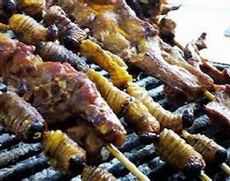

Bienvenidos a nuestro blog
Explora los sabores únicos del Oriente Ecuatoriano, con sus platos tradicionales y secretos gastronómicos.
Listas y Estructura
Beneficios de la gastronomía del Oriente
- Preparaciones naturales y saludables.
- Ingredientes frescos y locales.
- Recetas con raíces ancestrales.
Pasos para disfrutar de los platos:
- Selecciona los ingredientes más frescos.
- Sigue las recetas tradicionales paso a paso.
- Comparte la experiencia con tus seres queridos.
Horarios de Actividades
| Horario | Actividad |
|---|---|
| 8:00 AM | Preparación del desayuno |
| 12:00 PM | Almuerzo tradicional |
| 7:00 PM | Cena con platos típicos |
Video destacado
Galería de imágenes
xxxx.jpeg)